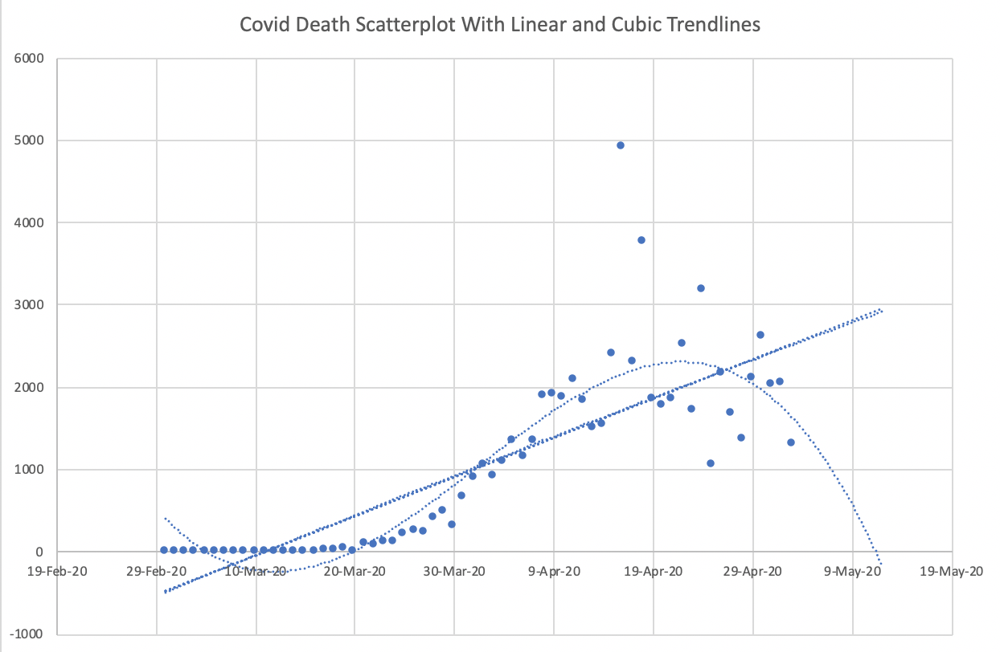

Polynomial Regression
Contents
Polynomial Regression¶
Announcements¶
The quiz tomorrow will have 3 questions. The topics will be:
Performing K-Means clustering using scikit-learn. See the notebooks from Week 5.
Performing K-Means clustering by hand (assign to clusters, find centroids, repeat). We discussed this Wednesday of Week 5 (much of the discussion was at the whiteboard). (Here is a Wikipedia description and an animation on YouTube.)
Using a pandas DataFrame’s
applymethod using a lambda function withaxis=0(apply to one column at a time) or withaxis=1(apply to one row at a time). (We first introducedapplyin this notebook, and it also was used in both worksheets last week.)
There isn’t time to go over this material today, but Yasmeen will review the material on Tuesday. Yasmeen and I also have Zoom office hours the next two days:
Yasmeen: 3:00-5:00pm Monday
Chris: 11:00am-12:30pm Tuesday
See Canvas for the Zoom links to the office hours.
Linear Regression with the cars dataset¶
Let’s try to express “Horsepower” in terms of “MPG” (miles per gallon). You should have the intuition that these two columns are negatively correlated.
import pandas as pd
import altair as alt
df = pd.read_csv("../data/cars.csv").dropna()
df.rename({"Miles_per_Gallon":"MPG"}, axis=1, inplace=True)
Looking at the following, we see that indeed, “MPG” and “Horsepower” are quite negatively correlated.
df.corr()
| MPG | Cylinders | Displacement | Horsepower | Weight_in_lbs | Acceleration | |
|---|---|---|---|---|---|---|
| MPG | 1.000000 | -0.777618 | -0.805127 | -0.778427 | -0.832244 | 0.423329 |
| Cylinders | -0.777618 | 1.000000 | 0.950823 | 0.842983 | 0.897527 | -0.504683 |
| Displacement | -0.805127 | 0.950823 | 1.000000 | 0.897257 | 0.932994 | -0.543800 |
| Horsepower | -0.778427 | 0.842983 | 0.897257 | 1.000000 | 0.864538 | -0.689196 |
| Weight_in_lbs | -0.832244 | 0.897527 | 0.932994 | 0.864538 | 1.000000 | -0.416839 |
| Acceleration | 0.423329 | -0.504683 | -0.543800 | -0.689196 | -0.416839 | 1.000000 |
This is reflected in the chart in the sense that as one coordinate value increases, the other tends to decrease.
alt.Chart(df).mark_circle().encode(
x="MPG",
y="Horsepower"
)
Let’s investigate the same thing using scikit-learn. We follow the usual pattern:
import
create/instantiate
fit
predict/transform
# import
from sklearn.linear_model import LinearRegression
# create/instantiate
reg = LinearRegression()
The following is probably the most common mistake with scikit-learn. The first input needs to be two-dimensional (in this case, the first input needs to be a DataFrame, not a Series).
reg.fit(df["MPG"], df["Horsepower"])
---------------------------------------------------------------------------
ValueError Traceback (most recent call last)
/var/folders/8j/gshrlmtn7dg4qtztj4d4t_w40000gn/T/ipykernel_1317/2122096284.py in <module>
----> 1 reg.fit(df["MPG"], df["Horsepower"])
~/miniconda3/envs/math10s22/lib/python3.7/site-packages/sklearn/linear_model/_base.py in fit(self, X, y, sample_weight)
661
662 X, y = self._validate_data(
--> 663 X, y, accept_sparse=accept_sparse, y_numeric=True, multi_output=True
664 )
665
~/miniconda3/envs/math10s22/lib/python3.7/site-packages/sklearn/base.py in _validate_data(self, X, y, reset, validate_separately, **check_params)
579 y = check_array(y, **check_y_params)
580 else:
--> 581 X, y = check_X_y(X, y, **check_params)
582 out = X, y
583
~/miniconda3/envs/math10s22/lib/python3.7/site-packages/sklearn/utils/validation.py in check_X_y(X, y, accept_sparse, accept_large_sparse, dtype, order, copy, force_all_finite, ensure_2d, allow_nd, multi_output, ensure_min_samples, ensure_min_features, y_numeric, estimator)
974 ensure_min_samples=ensure_min_samples,
975 ensure_min_features=ensure_min_features,
--> 976 estimator=estimator,
977 )
978
~/miniconda3/envs/math10s22/lib/python3.7/site-packages/sklearn/utils/validation.py in check_array(array, accept_sparse, accept_large_sparse, dtype, order, copy, force_all_finite, ensure_2d, allow_nd, ensure_min_samples, ensure_min_features, estimator)
771 "Reshape your data either using array.reshape(-1, 1) if "
772 "your data has a single feature or array.reshape(1, -1) "
--> 773 "if it contains a single sample.".format(array)
774 )
775
ValueError: Expected 2D array, got 1D array instead:
array=[18. 15. 18. 16. 17. 15. 14. 14. 14. 15. 15. 14. 15. 14.
24. 22. 18. 21. 27. 26. 25. 24. 25. 26. 21. 10. 10. 11.
9. 27. 28. 25. 19. 16. 17. 19. 18. 14. 14. 14. 14. 12.
13. 13. 18. 22. 19. 18. 23. 28. 30. 30. 31. 35. 27. 26.
24. 25. 23. 20. 21. 13. 14. 15. 14. 17. 11. 13. 12. 13.
19. 15. 13. 13. 14. 18. 22. 21. 26. 22. 28. 23. 28. 27.
13. 14. 13. 14. 15. 12. 13. 13. 14. 13. 12. 13. 18. 16.
18. 18. 23. 26. 11. 12. 13. 12. 18. 20. 21. 22. 18. 19.
21. 26. 15. 16. 29. 24. 20. 19. 15. 24. 20. 11. 20. 19.
15. 31. 26. 32. 25. 16. 16. 18. 16. 13. 14. 14. 14. 29.
26. 26. 31. 32. 28. 24. 26. 24. 26. 31. 19. 18. 15. 15.
16. 15. 16. 14. 17. 16. 15. 18. 21. 20. 13. 29. 23. 20.
23. 24. 25. 24. 18. 29. 19. 23. 23. 22. 25. 33. 28. 25.
25. 26. 27. 17.5 16. 15.5 14.5 22. 22. 24. 22.5 29. 24.5 29.
33. 20. 18. 18.5 17.5 29.5 32. 28. 26.5 20. 13. 19. 19. 16.5
16.5 13. 13. 13. 31.5 30. 36. 25.5 33.5 17.5 17. 15.5 15. 17.5
20.5 19. 18.5 16. 15.5 15.5 16. 29. 24.5 26. 25.5 30.5 33.5 30.
30.5 22. 21.5 21.5 43.1 36.1 32.8 39.4 36.1 19.9 19.4 20.2 19.2 20.5
20.2 25.1 20.5 19.4 20.6 20.8 18.6 18.1 19.2 17.7 18.1 17.5 30. 27.5
27.2 30.9 21.1 23.2 23.8 23.9 20.3 17. 21.6 16.2 31.5 29.5 21.5 19.8
22.3 20.2 20.6 17. 17.6 16.5 18.2 16.9 15.5 19.2 18.5 31.9 34.1 35.7
27.4 25.4 23. 27.2 23.9 34.2 34.5 31.8 37.3 28.4 28.8 26.8 33.5 41.5
38.1 32.1 37.2 28. 26.4 24.3 19.1 34.3 29.8 31.3 37. 32.2 46.6 27.9
40.8 44.3 43.4 36.4 30. 44.6 33.8 29.8 32.7 23.7 35. 32.4 27.2 26.6
25.8 23.5 30. 39.1 39. 35.1 32.3 37. 37.7 34.1 34.7 34.4 29.9 33.
33.7 32.4 32.9 31.6 28.1 30.7 25.4 24.2 22.4 26.6 20.2 17.6 28. 27.
34. 31. 29. 27. 24. 36. 37. 31. 38. 36. 36. 36. 34. 38.
32. 38. 25. 38. 26. 22. 32. 36. 27. 27. 44. 32. 28. 31. ].
Reshape your data either using array.reshape(-1, 1) if your data has a single feature or array.reshape(1, -1) if it contains a single sample.
The key to fixing this error in this case is to use a list of column names (in this case, it’s just the single column name “MPG”, but we still need it to be in a list).
# fit
reg.fit(df[["MPG"]], df["Horsepower"])
LinearRegression()
reg.predict(df[["MPG"]])
array([125.3756586 , 136.8923227 , 125.3756586 , 133.05343467,
129.21454664, 136.8923227 , 140.73121073, 140.73121073,
140.73121073, 136.8923227 , 136.8923227 , 140.73121073,
136.8923227 , 140.73121073, 102.34233041, 110.02010647,
125.3756586 , 113.8589945 , 90.82566631, 94.66455434,
98.50344237, 102.34233041, 98.50344237, 94.66455434,
113.8589945 , 156.08676286, 156.08676286, 152.24787483,
159.9256509 , 90.82566631, 86.98677828, 98.50344237,
121.53677057, 133.05343467, 129.21454664, 121.53677057,
125.3756586 , 140.73121073, 140.73121073, 140.73121073,
140.73121073, 148.4089868 , 144.57009877, 144.57009877,
125.3756586 , 110.02010647, 121.53677057, 125.3756586 ,
106.18121844, 86.98677828, 79.30900221, 79.30900221,
75.47011418, 60.11456205, 90.82566631, 94.66455434,
102.34233041, 98.50344237, 106.18121844, 117.69788254,
113.8589945 , 144.57009877, 140.73121073, 136.8923227 ,
140.73121073, 129.21454664, 152.24787483, 144.57009877,
148.4089868 , 144.57009877, 121.53677057, 136.8923227 ,
144.57009877, 144.57009877, 140.73121073, 125.3756586 ,
110.02010647, 113.8589945 , 94.66455434, 110.02010647,
86.98677828, 106.18121844, 86.98677828, 90.82566631,
144.57009877, 140.73121073, 144.57009877, 140.73121073,
136.8923227 , 148.4089868 , 144.57009877, 144.57009877,
140.73121073, 144.57009877, 148.4089868 , 144.57009877,
125.3756586 , 133.05343467, 125.3756586 , 125.3756586 ,
106.18121844, 94.66455434, 152.24787483, 148.4089868 ,
144.57009877, 148.4089868 , 125.3756586 , 117.69788254,
113.8589945 , 110.02010647, 125.3756586 , 121.53677057,
113.8589945 , 94.66455434, 136.8923227 , 133.05343467,
83.14789024, 102.34233041, 117.69788254, 121.53677057,
136.8923227 , 102.34233041, 117.69788254, 152.24787483,
117.69788254, 121.53677057, 136.8923227 , 75.47011418,
94.66455434, 71.63122615, 98.50344237, 133.05343467,
133.05343467, 125.3756586 , 133.05343467, 144.57009877,
140.73121073, 140.73121073, 140.73121073, 83.14789024,
94.66455434, 94.66455434, 75.47011418, 71.63122615,
86.98677828, 102.34233041, 94.66455434, 102.34233041,
94.66455434, 75.47011418, 121.53677057, 125.3756586 ,
136.8923227 , 136.8923227 , 133.05343467, 136.8923227 ,
133.05343467, 140.73121073, 129.21454664, 133.05343467,
136.8923227 , 125.3756586 , 113.8589945 , 117.69788254,
144.57009877, 83.14789024, 106.18121844, 117.69788254,
106.18121844, 102.34233041, 98.50344237, 102.34233041,
125.3756586 , 83.14789024, 121.53677057, 106.18121844,
106.18121844, 110.02010647, 98.50344237, 67.79233811,
86.98677828, 98.50344237, 98.50344237, 94.66455434,
90.82566631, 127.29510262, 133.05343467, 134.97287868,
138.81176672, 110.02010647, 110.02010647, 102.34233041,
108.10066246, 83.14789024, 100.42288639, 83.14789024,
67.79233811, 117.69788254, 125.3756586 , 123.45621459,
127.29510262, 81.22844623, 71.63122615, 86.98677828,
92.74511032, 117.69788254, 144.57009877, 121.53677057,
121.53677057, 131.13399065, 131.13399065, 144.57009877,
144.57009877, 144.57009877, 73.55067016, 79.30900221,
56.27567401, 96.58399836, 65.8728941 , 127.29510262,
129.21454664, 134.97287868, 136.8923227 , 127.29510262,
115.77843852, 121.53677057, 123.45621459, 133.05343467,
134.97287868, 134.97287868, 133.05343467, 83.14789024,
100.42288639, 94.66455434, 96.58399836, 77.38955819,
65.8728941 , 79.30900221, 77.38955819, 110.02010647,
111.93955049, 111.93955049, 29.01956898, 55.89178521,
68.56011572, 43.2234547 , 55.89178521, 118.08177134,
120.00121536, 116.93010493, 120.76899296, 115.77843852,
116.93010493, 98.11955357, 115.77843852, 120.00121536,
115.39454972, 114.62677211, 123.07232578, 124.9917698 ,
120.76899296, 126.52732501, 124.9917698 , 127.29510262,
79.30900221, 88.90622229, 90.0578887 , 75.85400298,
113.4751057 , 105.41344083, 103.11010801, 102.72621921,
116.54621613, 129.21454664, 111.55566168, 132.28565706,
73.55067016, 81.22844623, 111.93955049, 118.46566014,
108.86844006, 116.93010493, 115.39454972, 129.21454664,
126.91121382, 131.13399065, 124.607881 , 129.59843544,
134.97287868, 120.76899296, 123.45621459, 72.01511495,
63.56956128, 57.42734042, 89.2901111 , 96.96788716,
106.18121844, 90.0578887 , 102.72621921, 63.18567247,
62.03400606, 72.39900375, 51.28511957, 85.45122306,
83.91566785, 91.59344391, 65.8728941 , 35.16178983,
48.21400915, 71.24733734, 51.66900838, 86.98677828,
93.12899913, 101.190664 , 121.15288177, 62.80178367,
80.07677982, 74.31844777, 52.43678598, 70.86344854,
15.58346087, 87.37066708, 37.84901146, 24.41290334,
27.86790257, 54.7401188 , 79.30900221, 23.26123693,
64.72122769, 80.07677982, 68.94400452, 103.49399682,
60.11456205, 70.09567093, 90.0578887 , 92.36122152,
95.43233195, 104.26177442, 79.30900221, 44.37512111,
44.75900992, 59.73067324, 70.47955974, 52.43678598,
49.74956436, 63.56956128, 61.26622846, 62.41789487,
79.69289101, 67.79233811, 65.10511649, 70.09567093,
68.17622692, 73.16678136, 86.60288947, 76.62178059,
96.96788716, 101.5745528 , 108.48455126, 92.36122152,
116.93010493, 126.91121382, 86.98677828, 90.82566631,
63.95345008, 75.47011418, 83.14789024, 90.82566631,
102.34233041, 56.27567401, 52.43678598, 75.47011418,
48.59789795, 56.27567401, 56.27567401, 56.27567401,
63.95345008, 48.59789795, 71.63122615, 48.59789795,
98.50344237, 48.59789795, 94.66455434, 110.02010647,
71.63122615, 56.27567401, 90.82566631, 90.82566631,
25.56456975, 71.63122615, 86.98677828, 75.47011418])
#add a column to df
df["Pred"] = reg.predict(df[["MPG"]])
Notice how the predicted values show up on the right side of the DataFrame. And at least the first one is pretty accurate: the prediction is 125 whereas the true value is 130.
df.head()
| Name | MPG | Cylinders | Displacement | Horsepower | Weight_in_lbs | Acceleration | Year | Origin | Pred | |
|---|---|---|---|---|---|---|---|---|---|---|
| 0 | chevrolet chevelle malibu | 18.0 | 8 | 307.0 | 130.0 | 3504 | 12.0 | 1970-01-01 | USA | 125.375659 |
| 1 | buick skylark 320 | 15.0 | 8 | 350.0 | 165.0 | 3693 | 11.5 | 1970-01-01 | USA | 136.892323 |
| 2 | plymouth satellite | 18.0 | 8 | 318.0 | 150.0 | 3436 | 11.0 | 1970-01-01 | USA | 125.375659 |
| 3 | amc rebel sst | 16.0 | 8 | 304.0 | 150.0 | 3433 | 12.0 | 1970-01-01 | USA | 133.053435 |
| 4 | ford torino | 17.0 | 8 | 302.0 | 140.0 | 3449 | 10.5 | 1970-01-01 | USA | 129.214547 |
c = alt.Chart(df).mark_circle().encode(
x="MPG",
y="Horsepower"
)
We eventually want to plot the predicted values using a red line. In the following chart c1, we are using the same “y” value as before, so the data is the exact same for now.
c1 = alt.Chart(df).mark_line(color="red").encode(
x="MPG",
y="Horsepower"
)
We can display two Altair charts in the same position, one “layered” over the other, using +.
c+c1
Now let’s try the same thing, but using the “Pred” column for the y-values.
c1 = alt.Chart(df).mark_line(color="red").encode(
x="MPG",
y="Pred"
)
The following shows the line of best fit for this data. (We will describe what is meant by “best” in a later class.)
c+c1
type(reg)
sklearn.linear_model._base.LinearRegression
We can find the slope of the line using reg.coef_. The fact that this slope is negative corresponds to the fact that these variables are negatively correlated.
reg.coef_
array([-3.83888803])
The following is the y-intercept. These sorts of stored parameter values are usually named in scikit-learn using a trailing underscore, so for example, using intercept_ rather than the plain intercept.
reg.intercept_
194.47564319018676
Do you see how these values of -3.84 and 194.5 are reflected in the above line?
Polynomial Regression with the cars dataset¶
Motto: Polynomial regression is no more difficult than linear regression.
We discussed at the whiteboard how finding coefficients in a polynomial can be viewed as a special case of linear regression. (The reverse is also true, but here we are using the fact that we know how to find linear regression coefficients, to find polynomial coefficients.)
We just need to add some new columns to our DataFrame. Here we use f-strings and a for-loop to keep our code Pythonic and DRY.
for i in range(1,4):
df[f"MPG{i}"] = df["MPG"]**i
Notice how the true MPG value in the first row is 18, and so at the end we see the values \(18\), \(18^2\), and \(18^3\). This method would easily adapt to higher degrees. (That is the main benefit of not just typing the three columns out one at a time.)
df.head()
| Name | MPG | Cylinders | Displacement | Horsepower | Weight_in_lbs | Acceleration | Year | Origin | Pred | MPG1 | MPG2 | MPG3 | |
|---|---|---|---|---|---|---|---|---|---|---|---|---|---|
| 0 | chevrolet chevelle malibu | 18.0 | 8 | 307.0 | 130.0 | 3504 | 12.0 | 1970-01-01 | USA | 125.375659 | 18.0 | 324.0 | 5832.0 |
| 1 | buick skylark 320 | 15.0 | 8 | 350.0 | 165.0 | 3693 | 11.5 | 1970-01-01 | USA | 136.892323 | 15.0 | 225.0 | 3375.0 |
| 2 | plymouth satellite | 18.0 | 8 | 318.0 | 150.0 | 3436 | 11.0 | 1970-01-01 | USA | 125.375659 | 18.0 | 324.0 | 5832.0 |
| 3 | amc rebel sst | 16.0 | 8 | 304.0 | 150.0 | 3433 | 12.0 | 1970-01-01 | USA | 133.053435 | 16.0 | 256.0 | 4096.0 |
| 4 | ford torino | 17.0 | 8 | 302.0 | 140.0 | 3449 | 10.5 | 1970-01-01 | USA | 129.214547 | 17.0 | 289.0 | 4913.0 |
reg = LinearRegression()
Here we make a list of the three columns we’re interested in.
# cols = ["MPG1","MPG2","MPG3"]
# df.columns[-3:]
cols = [f"MPG{i}" for i in range(1,4)]
type(cols)
list
Because cols is already a list, it’s important to use df[cols] instead of df[[cols]].
reg.fit(df[cols],df["Horsepower"])
LinearRegression()
reg.coef_
array([-3.01312437e+01, 8.66793237e-01, -8.50566252e-03])
Here is a nice way to display which value corresponds to which coefficient.
pd.Series(reg.coef_, index=cols)
MPG1 -30.131244
MPG2 0.866793
MPG3 -0.008506
dtype: float64
reg.intercept_
429.5814606301147
The above values can be interpreted as saying that our model estimates the following formula, where H stands for horsepower and where M stands for miles per gallon.
Let’s add the values predicted by our model into the DataFrame.
df["Pred3"] = reg.predict(df[cols])
Let’s get a new Altair chart. We can save some typing by copying our linear chart c1.
c3 = c1.copy()
c3 = c3.encode(y="Pred3")
Warning: it often happens in Machine Learning that the better the fit appears to be, the worse it will perform on future data (due to overfitting). So don’t be too impressed by the accuracy of this fit.
c+c3
Warning: Don’t misuse polynomial regression¶
For some reason, unreasonable cubic models often get shared in the media. The cubic polynomial that “fits best” can be interesting to look at, but don’t expect it to provide accurate predictions in the future. (This is a symptom of overfitting, which is a key concept in Machine Learning that we will return to soon.)
I don’t know of any natural occurring phenomenon that follows a cubic pattern, so don’t be deceived by the closeness of a cubic model fit.
Example from FiveThirtyEight¶
Here a cubic model is being used to model the percentage of Yes confirmation votes as a function of time.

Example from Trump’s Covid-19 team¶
Using a cubic model to predict deaths from Covid-19. This particular cubic model suggests deaths will get to 0 in mid-May 2020.
